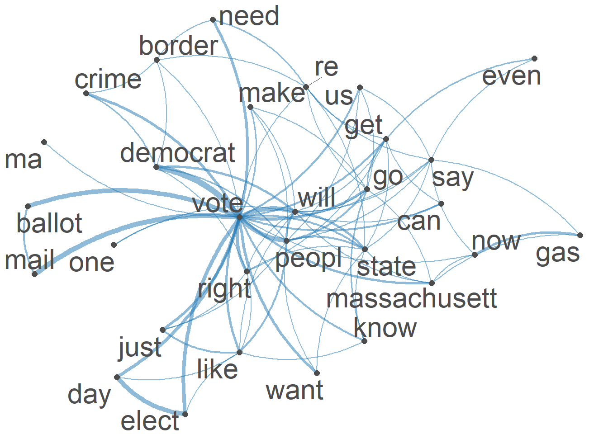
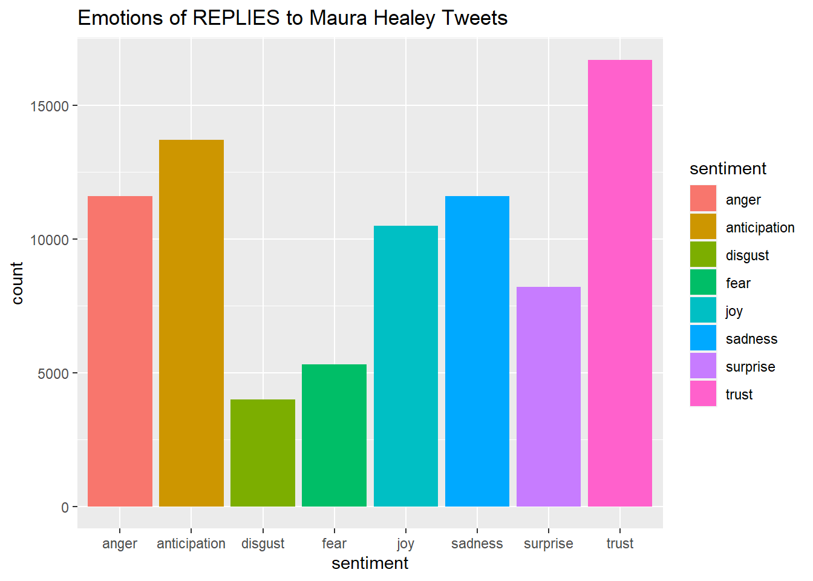
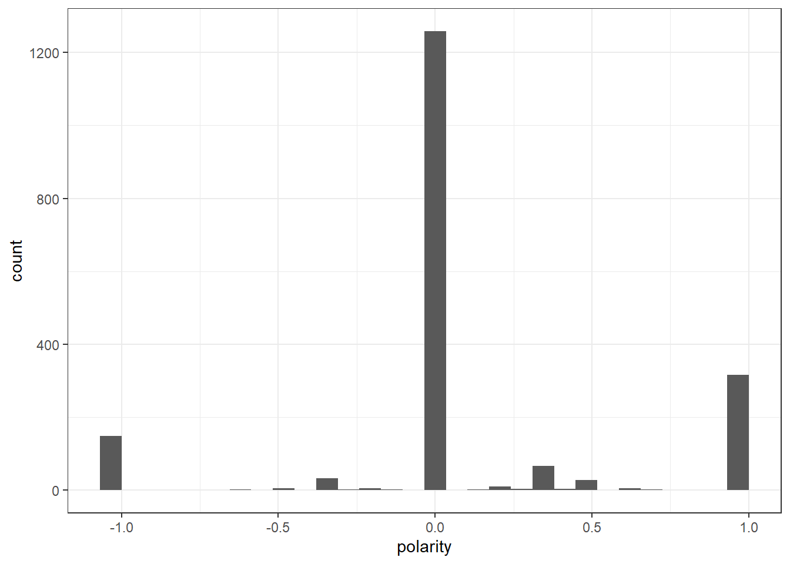
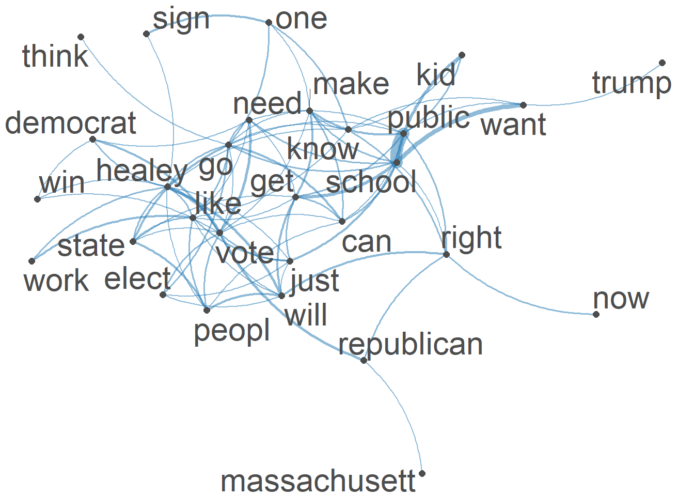
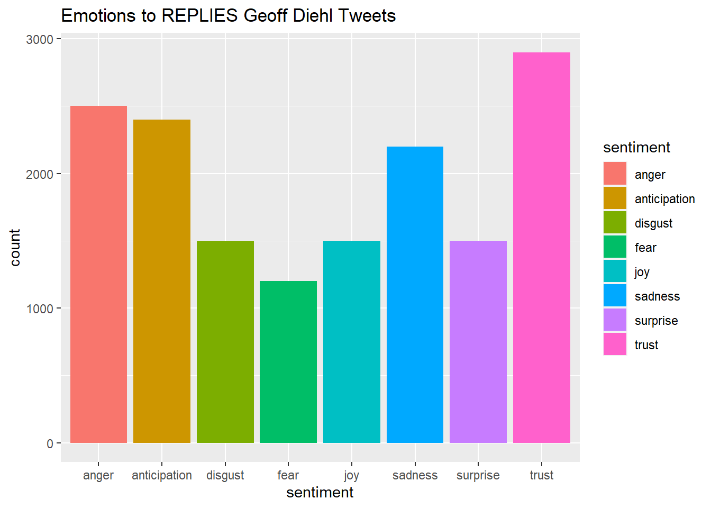
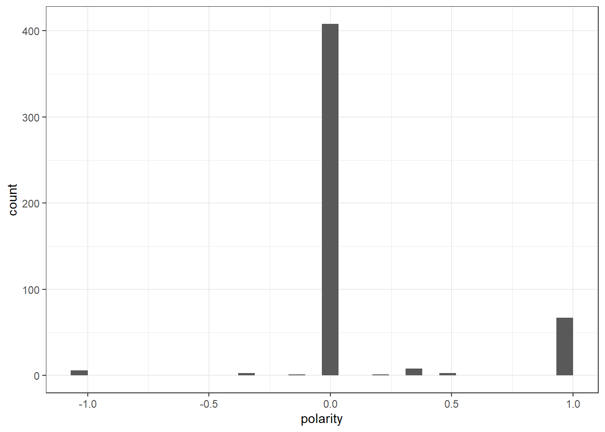

Code
knitr::opts_chunk$set(echo = TRUE, warning = FALSE, StringsAsFActors= FALSE)Rhowena Vespa
November 6, 2022
This project analyzes Twitter engagement of specific Massachusetts GOvernor Candidates namely Maura Healey and Geoff Diehl. CORPUS: Extracted twitter replies (Oct 29 to Nov 4) from all of Healey and Diehl’s tweets. The replies looks into how these candidates engages other twitter users by generating a response to their original tweet or retweet. The replies are then cleaned and pre-processed. Analysis: Initial Data visualization (word cloud) TF-IDF Semantic Network Analysis Sentiment Analysis + Polarity SML -Naive Bayes, SVM, Random Forest
I wanted to analyze twitter engagement and correlate it with poll results With the election coming up, I would also like to correlate my analysis with actual election results.
── Attaching packages ─────────────────────────────────────── tidyverse 1.3.2 ──
✔ ggplot2 3.3.6 ✔ purrr 0.3.5
✔ tibble 3.1.8 ✔ dplyr 1.0.10
✔ tidyr 1.2.1 ✔ stringr 1.4.1
✔ readr 2.1.3 ✔ forcats 0.5.2
── Conflicts ────────────────────────────────────────── tidyverse_conflicts() ──
✖ dplyr::filter() masks stats::filter()
✖ dplyr::lag() masks stats::lag()Package version: 3.2.3
Unicode version: 13.0
ICU version: 69.1
Parallel computing: 8 of 8 threads used.
See https://quanteda.io for tutorials and examples.Loading required package: NLP
Attaching package: 'NLP'
The following objects are masked from 'package:quanteda':
meta, meta<-
The following object is masked from 'package:ggplot2':
annotate
Attaching package: 'tm'
The following object is masked from 'package:quanteda':
stopwords------------------------------------------------------------------------------
You have loaded plyr after dplyr - this is likely to cause problems.
If you need functions from both plyr and dplyr, please load plyr first, then dplyr:
library(plyr); library(dplyr)
------------------------------------------------------------------------------
Attaching package: 'plyr'
The following objects are masked from 'package:dplyr':
arrange, count, desc, failwith, id, mutate, rename, summarise,
summarize
The following object is masked from 'package:purrr':
compactLoading required package: usethisLoading required package: lattice
Attaching package: 'caret'
The following object is masked from 'package:purrr':
lift
Attaching package: 'quanteda.sentiment'
The following object is masked from 'package:quanteda':
data_dictionary_LSD2015Rows: 1900 Columns: 79
── Column specification ────────────────────────────────────────────────────────
Delimiter: ","
chr (33): edit_history_tweet_ids, text, lang, source, reply_settings, entit...
dbl (18): id, conversation_id, referenced_tweets.replied_to.id, referenced_...
lgl (24): referenced_tweets.retweeted.id, edit_controls.is_edit_eligible, r...
dttm (4): edit_controls.editable_until, created_at, author.created_at, __tw...
ℹ Use `spec()` to retrieve the full column specification for this data.
ℹ Specify the column types or set `show_col_types = FALSE` to quiet this message.Healy_corpus <- Corpus(VectorSource(Healy$text))
Healy_corpus <- tm_map(Healy_corpus, tolower) #lowercase
Healy_corpus <- tm_map(Healy_corpus, removeWords,
c("s","healey", "healy","maura","rt", "amp"))
Healy_corpus <- tm_map(Healy_corpus, removeWords,
stopwords("english"))
Healy_corpus <- tm_map(Healy_corpus, removePunctuation)
Healy_corpus <- tm_map(Healy_corpus, stripWhitespace)
Healy_corpus <- tm_map(Healy_corpus, removeNumbers)Tokens consisting of 1,900 documents.
text1 :
[1] "four" "day" "nov" "th" "best"
[6] "pitchnnfor" "starter" "abort" "fulli" "protect"
[11] "ma" "chang"
[ ... and 14 more ]
text2 :
[1] "reproduct" "freedom" "protect" "ma" "sent"
[6] "back" "state" "…" "belong" "ag"
[11] "understand"
text3 :
[1] "serious" "state" "'" "follow" "scienc"
[6] "'" "w" "experiment" "drug" "young"
[11] "femal" "'"
[ ... and 13 more ]
text4 :
[1] "preserv" "democraci" "come" "man"
text5 :
[1] "protect" "kid" "mean" "vote"
text6 :
[1] "like" "serious" "guy" "republican"
[5] "fix" "anyth" "claim" "abl"
[9] "just" "gonna" "pull" "sociallyconserv"
[ ... and 11 more ]
[ reached max_ndoc ... 1,894 more documents ]Document-feature matrix of: 1,900 documents, 3,683 features (99.79% sparse) and 0 docvars.
features
docs four day nov th best pitchnnfor starter abort fulli protect
text1 1 1 1 1 1 1 1 1 1 1
text2 0 0 0 0 0 0 0 0 0 1
text3 0 0 0 0 0 0 0 0 0 2
text4 0 0 0 0 0 0 0 0 0 0
text5 0 0 0 0 0 0 0 0 0 1
text6 0 0 0 0 0 0 0 0 0 0
[ reached max_ndoc ... 1,894 more documents, reached max_nfeat ... 3,673 more features ]# create a full dfm for comparison---use this to append to polarity
Healy_Dfm <- tokens(Healy_tokens,
remove_punct = TRUE,
remove_symbols = TRUE,
remove_numbers = TRUE,
remove_url = TRUE,
split_hyphens = FALSE,
split_tags = FALSE,
include_docvars = TRUE) %>%
tokens_tolower() %>%
dfm(remove = stopwords('english')) %>%
dfm_trim(min_termfreq = 10, verbose = FALSE) %>%
dfm() vote will go peopl state like democrat right
403 124 123 117 114 100 96 93
just elect
89 89 vote will go state peopl like democrat right
308.5110 152.9454 151.2329 145.2853 145.2353 132.4511 127.6189 125.0157
elect just
121.0111 119.1919 # convert corpus to dfm using the dictionary---use to append ???
HealyDfm_nrc <- tokens(Healy_tokens,
remove_punct = TRUE,
remove_symbols = TRUE,
remove_numbers = TRUE,
remove_url = TRUE,
split_tags = FALSE,
split_hyphens = FALSE,
include_docvars = TRUE) %>%
tokens_tolower() %>%
dfm(remove = stopwords('english')) %>%
dfm_trim(min_termfreq = 10, verbose = FALSE) %>%
dfm() %>%
dfm_lookup(data_dictionary_NRC)[1] "vote" "will" "go" "peopl" "state" "like" Feature co-occurrence matrix of: 6 by 334 features.
features
features day th best abort protect ma chang two just anyth
day 3 1 2 1 1 3 1 1 9 1
th 1 0 1 2 1 2 1 1 1 1
best 2 1 0 1 2 2 1 1 1 1
abort 1 2 1 0 1 2 1 1 1 1
protect 1 1 2 1 4 3 1 1 2 1
ma 3 2 2 2 3 1 2 3 5 2
[ reached max_nfeat ... 324 more features ]#Visualization of semantic network based on hashtag co-occurrence
Healytopgat_fcm <- fcm_select(Healytag_fcm, pattern = Healytoptag)
textplot_network(Healytopgat_fcm, min_freq = 0.8,
omit_isolated = TRUE,
edge_color = "#1F78B4",
edge_alpha = 0.5,
edge_size = 2,
vertex_color = "#4D4D4D",
vertex_size = 2,
vertex_labelcolor = NULL,
vertex_labelfont = NULL,
vertex_labelsize = 8,
offset = NULL)
[1] "docname" "Segment" "WPS" "WC" "Sixltr"
[6] "Dic" "anger" "anticipation" "disgust" "fear"
[11] "joy" "negative" "positive" "sadness" "surprise"
[16] "trust" "AllPunc" "Period" "Comma" "Colon"
[21] "SemiC" "QMark" "Exclam" "Dash" "Quote"
[26] "Apostro" "Parenth" "OtherP" Healy_tr_new <- data.frame(rowSums(Healy_tr[2:1900]))
Healy_tr_mean <- data.frame(rowMeans(Healy_tr[2:1900]))#get mean of sentiment values
names(Healy_tr_new)[1] <- "Count"
Healy_tr_new <- cbind("sentiment" = rownames(Healy_tr_new), Healy_tr_new)
rownames(Healy_tr_new) <- NULL
Healy_tr_new2<-Healy_tr_new[1:8,]
[1] "doc_id" "anger" "anticipation" "disgust" "fear"
[6] "joy" "negative" "positive" "sadness" "surprise"
[11] "trust" write_csv(Healydf_nrc,"Healy-Polarity Scores")
Healydf_nrc$polarity <- (Healydf_nrc$positive - Healydf_nrc$negative)/(Healydf_nrc$positive + Healydf_nrc$negative)
Healydf_nrc$polarity[(Healydf_nrc$positive + Healydf_nrc$negative) == 0] <- 0
ggplot(Healydf_nrc) +
geom_histogram(aes(x=polarity)) +
theme_bw()`stat_bin()` using `bins = 30`. Pick better value with `binwidth`.
polarity
text1 neutral
text2 positive
text4 neutral
text6 neutral
text7 negative
text8 neutral
Healy_corpus
text1 four days nov th best pitchnnfor starters abortion fully protected ma change two items list just hyperbole anything drive business ma cost energy even higher crazy
text2 reproductive freedom protected ma sent back states… belongs ag understand
text4 preserving democracy come man
text6 like seriously guys republicans fix anything claim able just gonna pull sociallyconservative bs take away right vote alongside social security medicare telegraphing hard
text7 willing trade democracy lower gas prices will get neither
text8 httpstcopqhknanuo# set seed
set.seed(123)
# create id variable in corpus metadata
docvars(HealyCorpus_P, "id") <- 1:ndoc(HealyCorpus_P)
# create training set (60% of data) and initial test set
N <- ndoc(HealyCorpus_P)
trainIndex <- sample(1:N,.6 * N)
testIndex <- c(1:N)[-trainIndex]
# split test set in half (so 20% of data are test, 20% of data are held-out)
N <- length(testIndex)
heldOutIndex <- sample(1:N, .5 * N)
testIndex <- testIndex[-heldOutIndex]
# now apply indices to create subsets and dfms
dfmTrain <- corpus_subset(HealyCorpus_P, id %in% trainIndex) %>% tokens() %>% dfm()
dfmTest <- corpus_subset(HealyCorpus_P, id %in% testIndex) %>% tokens() %>% dfm()
dfmHeldOut <- corpus_subset(HealyCorpus_P, id %in% heldOutIndex) %>% tokens() %>% dfm()
head(trainIndex)[1] 415 463 179 526 195 938[1] 3 4 12 14 15 20
Call:
textmodel_nb.dfm(x = dfmTrain, y = docvars(dfmTrain, "polarity"),
distribution = "Bernoulli")
Class Priors:
(showing first 3 elements)
negative neutral positive
0.3333 0.3333 0.3333
Estimated Feature Scores:
reproductive freedom protected ma sent back states
negative 0.011494 0.011494 0.011494 0.04598 0.011494 0.022989 0.011494
neutral 0.001309 0.003927 0.001309 0.02618 0.002618 0.006545 0.003927
positive 0.010582 0.015873 0.015873 0.04233 0.015873 0.037037 0.015873
… belongs ag understand willing trade democracy
negative 0.02299 0.011494 0.011494 0.011494 0.022989 0.022989 0.022989
neutral 0.02225 0.001309 0.006545 0.001309 0.002618 0.001309 0.002618
positive 0.01587 0.010582 0.031746 0.010582 0.005291 0.005291 0.015873
lower gas prices will get neither httpstcopqhknanuo
negative 0.034483 0.02299 0.057471 0.09195 0.04598 0.022989 0.011494
neutral 0.002618 0.01702 0.003927 0.04188 0.03272 0.001309 0.002618
positive 0.005291 0.06878 0.010582 0.06878 0.06349 0.010582 0.005291
build economy works everyone raising living cost
negative 0.022989 0.022989 0.022989 0.022989 0.022989 0.022989 0.022989
neutral 0.001309 0.002618 0.001309 0.006545 0.001309 0.002618 0.003927
positive 0.010582 0.015873 0.005291 0.005291 0.015873 0.010582 0.015873
taxes chasing
negative 0.045977 0.022989
neutral 0.006545 0.001309
positive 0.005291 0.005291Confusion Matrix and Statistics
predicted
actual negative neutral positive
negative 2 33 1
neutral 0 240 3
positive 0 58 8
Overall Statistics
Accuracy : 0.7246
95% CI : (0.6743, 0.7711)
No Information Rate : 0.9594
P-Value [Acc > NIR] : 1
Kappa : 0.1313
Mcnemar's Test P-Value : <2e-16
Statistics by Class:
Class: negative Class: neutral Class: positive
Sensitivity 1.000000 0.7251 0.66667
Specificity 0.900875 0.7857 0.82583
Pos Pred Value 0.055556 0.9877 0.12121
Neg Pred Value 1.000000 0.1078 0.98566
Precision 0.055556 0.9877 0.12121
Recall 1.000000 0.7251 0.66667
F1 0.105263 0.8362 0.20513
Prevalence 0.005797 0.9594 0.03478
Detection Rate 0.005797 0.6957 0.02319
Detection Prevalence 0.104348 0.7043 0.19130
Balanced Accuracy 0.950437 0.7554 0.74625 negative neutral positive
text4 8.369084e-14 1.0000000 4.927139e-08
text6 1.084335e-08 0.9999950 4.980505e-06
text14 1.244174e-11 0.9999826 1.737715e-05
text17 6.671955e-13 0.9999999 9.920512e-08
text18 9.471524e-15 1.0000000 3.598392e-08
text24 2.010070e-12 1.0000000 3.591003e-08 negative neutral positive
Min. :0.000000 Min. :0.0000 Min. :0.00e+00
1st Qu.:0.000000 1st Qu.:1.0000 1st Qu.:0.00e+00
Median :0.000000 Median :1.0000 Median :3.00e-07
Mean :0.005803 Mean :0.9541 Mean :4.01e-02
3rd Qu.:0.000000 3rd Qu.:1.0000 3rd Qu.:1.33e-05
Max. :1.000000 Max. :1.0000 Max. :1.00e+00 text1320
" casting vote modern" text903
" black poverty charts dem areann africanamerican households boston live poverty line statistic conceals huge inequities across neighborhoods ranging hyde park charlestown" negative neutral positive
0.00135779 0.29476010 0.70388211 text1194
" gemini omg almost east coast california speak especially witch becomes gov thing holding together balance r gov entire legislature d unliked many reluctance ban covid 🗥 kids pissed moms" x freq
1 negative 23
2 neutral 256
3 positive 66 x freq
1 negative 1
2 neutral 320
3 positive 24Confusion Matrix and Statistics
predicted.nb
actual negative neutral positive
negative 1 22 0
neutral 0 254 2
positive 0 44 22
Overall Statistics
Accuracy : 0.8029
95% CI : (0.7569, 0.8436)
No Information Rate : 0.9275
P-Value [Acc > NIR] : 1
Kappa : 0.3391
Mcnemar's Test P-Value : NA
Statistics by Class:
Class: negative Class: neutral Class: positive
Sensitivity 1.000000 0.7937 0.91667
Specificity 0.936047 0.9200 0.86293
Pos Pred Value 0.043478 0.9922 0.33333
Neg Pred Value 1.000000 0.2584 0.99283
Precision 0.043478 0.9922 0.33333
Recall 1.000000 0.7937 0.91667
F1 0.083333 0.8819 0.48889
Prevalence 0.002899 0.9275 0.06957
Detection Rate 0.002899 0.7362 0.06377
Detection Prevalence 0.066667 0.7420 0.19130
Balanced Accuracy 0.968023 0.8569 0.88980# set seed
set.seed(123)
# set of training data
newTrainIndex <- trainIndex[sample(1:length(trainIndex))]
# create small DFM
dfmTrainSmall <- corpus_subset(HealyCorpus_P, id %in% newTrainIndex) %>% dfm(remove = stopwords("English"), remove_punct=T)
# trim the DFM down to frequent terms
dfmTrainSmall <- dfm_trim(dfmTrainSmall, min_docfreq = 20, min_termfreq = 20)
dim(dfmTrainSmall)[1] 1034 34# run model
polarity_SVM <- textmodel_svm(dfmTrainSmall, docvars(dfmTrainSmall, "polarity"))
# update test set
dfmTestMatchedSmall <- dfm_match(dfmTest, features = featnames(dfmTrainSmall))
# create a confusion matrix
actual <- docvars(dfmTestMatchedSmall, "polarity")
predicted <- predict(polarity_SVM, newdata = dfmTestMatchedSmall)
confusion <- table(actual, predicted)Confusion Matrix and Statistics
predicted
actual negative neutral positive
negative 2 32 2
neutral 0 240 3
positive 0 53 13
Overall Statistics
Accuracy : 0.7391
95% CI : (0.6894, 0.7847)
No Information Rate : 0.942
P-Value [Acc > NIR] : 1
Kappa : 0.1995
Mcnemar's Test P-Value : <2e-16
Statistics by Class:
Class: negative Class: neutral Class: positive
Sensitivity 1.000000 0.7385 0.72222
Specificity 0.900875 0.8500 0.83792
Pos Pred Value 0.055556 0.9877 0.19697
Neg Pred Value 1.000000 0.1667 0.98208
Precision 0.055556 0.9877 0.19697
Recall 1.000000 0.7385 0.72222
F1 0.105263 0.8451 0.30952
Prevalence 0.005797 0.9420 0.05217
Detection Rate 0.005797 0.6957 0.03768
Detection Prevalence 0.104348 0.7043 0.19130
Balanced Accuracy 0.950437 0.7942 0.78007 positive negative neutral
ma 0.10642383 0.04095159 -0.15027369
gas 0.63259122 -0.23232753 -0.45305789
will -0.04905536 0.17855470 -0.11240942
get 0.13327219 -0.08977719 -0.04335252
state 0.32094424 -0.03608965 -0.28125136
governor -0.23191741 0.03187021 0.19601274
re 0.19742408 0.07659889 -0.25219334
just -0.11477470 0.03795018 0.06346217
one 0.36764128 -0.05616672 -0.31978665
biden 0.20245429 -0.46449151 0.02273121 positive negative neutral
go -0.30889746 -0.06202332 0.34283740
need 0.08641445 -0.01586162 -0.07350022
now 0.12340404 0.19171685 -0.26537615
want -0.08106290 0.21969589 -0.12917587
know 0.44976743 0.01858271 -0.47835868
us 0.06998385 -0.06974139 -0.01704071
election 1.45926123 -0.33623228 -1.30718337
already -0.19044299 -0.02657631 0.21397132
border 0.30428331 -0.08398931 -0.24725324
Bias -0.73363968 -0.84683933 0.58081363Error in library(randomForest): there is no package called 'randomForest'dfmTrainSmallRf <- convert(dfmTrainSmall, to = "matrix")
dfmTestMatchedSmallRf <- convert(dfmTestMatchedSmall, to = "matrix")
set.seed(123)
Healey_polarity_RF <- randomForest(dfmTrainSmallRf,
y = as.factor(docvars(dfmTrainSmall)$polarity),
xtest = dfmTestMatchedSmallRf,
ytest = as.factor(docvars(dfmTestMatchedSmall)$polarity),
importance = TRUE,
mtry = 20,
ntree = 100
)Error in randomForest(dfmTrainSmallRf, y = as.factor(docvars(dfmTrainSmall)$polarity), : could not find function "randomForest"Error in eval(expr, envir, enclos): object 'Healey_polarity_RF' not foundConfusion Matrix and Statistics
predicted
actual negative neutral positive
negative 2 32 2
neutral 0 240 3
positive 0 53 13
Overall Statistics
Accuracy : 0.7391
95% CI : (0.6894, 0.7847)
No Information Rate : 0.942
P-Value [Acc > NIR] : 1
Kappa : 0.1995
Mcnemar's Test P-Value : <2e-16
Statistics by Class:
Class: negative Class: neutral Class: positive
Sensitivity 1.000000 0.7385 0.72222
Specificity 0.900875 0.8500 0.83792
Pos Pred Value 0.055556 0.9877 0.19697
Neg Pred Value 1.000000 0.1667 0.98208
Precision 0.055556 0.9877 0.19697
Recall 1.000000 0.7385 0.72222
F1 0.105263 0.8451 0.30952
Prevalence 0.005797 0.9420 0.05217
Detection Rate 0.005797 0.6957 0.03768
Detection Prevalence 0.104348 0.7043 0.19130
Balanced Accuracy 0.950437 0.7942 0.78007Error in varImpPlot(Healey_polarity_RF): could not find function "varImpPlot"Rows: 497 Columns: 79
── Column specification ────────────────────────────────────────────────────────
Delimiter: ","
chr (34): edit_history_tweet_ids, text, lang, source, reply_settings, entit...
dbl (18): id, conversation_id, referenced_tweets.replied_to.id, referenced_...
lgl (23): referenced_tweets.retweeted.id, edit_controls.is_edit_eligible, r...
dttm (4): edit_controls.editable_until, created_at, author.created_at, __tw...
ℹ Use `spec()` to retrieve the full column specification for this data.
ℹ Specify the column types or set `show_col_types = FALSE` to quiet this message.Diehl_corpus <- Corpus(VectorSource(Diehl$text))
Diehl_corpus <- tm_map(Diehl_corpus, tolower) #lowercase
Diehl_corpus <- tm_map(Diehl_corpus, removeWords,
c("s","geoff", "diehl","rt", "amp"))
Diehl_corpus <- tm_map(Diehl_corpus, removeWords,
stopwords("english"))
Diehl_corpus <- tm_map(Diehl_corpus, removePunctuation)
Diehl_corpus <- tm_map(Diehl_corpus, stripWhitespace)
Diehl_corpus <- tm_map(Diehl_corpus, removeNumbers)
Diehl_corpus <- corpus(Diehl_corpus,text_field = "text")
Diehl_text_df <- as.data.frame(Diehl_corpus)Tokens consisting of 497 documents.
text1 :
[1] "still" "beat" "fascism" "day" "week" "📴"
text2 :
[1] "wear" "mask" "'" "re" "dumb"
text3 :
[1] "'" "mention" "mask" "pay" "compani" "can" "charg"
[8] "whatev" "want" "follow" "'" "ll"
[ ... and 10 more ]
text4 :
[1] "argument" "gas" "pipelin" "energi" "independ" "right"
[7] "now" "new" "england" "get" "lng" "deliveri"
[ ... and 18 more ]
text5 :
[1] "shit" "u" "dumb" "masker" "democrat" "still"
[7] "fuck" "everyon" "caus" "price" "hike" "higher"
[ ... and 7 more ]
text6 :
[1] "compani" "take" "profit" "loss" "kinder" "morgan"
[7] "elect" "need" "proof" "energi" "independ" "way"
[ ... and 7 more ]
[ reached max_ndoc ... 491 more documents ]Document-feature matrix of: 497 documents, 1,921 features (99.49% sparse) and 0 docvars.
features
docs still beat fascism day week📴 wear mask ' re
text1 1 1 1 1 1 1 0 0 0 0
text2 0 0 0 0 0 0 1 1 1 1
text3 0 0 0 0 0 0 0 1 2 0
text4 0 0 0 0 0 0 0 0 0 0
text5 1 0 0 0 0 0 0 0 0 0
text6 0 0 0 0 0 0 0 0 0 0
[ reached max_ndoc ... 491 more documents, reached max_nfeat ... 1,911 more features ]# create a full dfm for comparison---use this to append to polarity
Diehl_Dfm <- tokens(Diehl_tokens,
remove_punct = TRUE,
remove_symbols = TRUE,
remove_numbers = TRUE,
remove_url = TRUE,
split_hyphens = FALSE,
split_tags = FALSE,
include_docvars = TRUE) %>%
tokens_tolower() %>%
dfm(remove = stopwords('english')) %>%
dfm_trim(min_termfreq = 10, verbose = FALSE) %>%
dfm() vote school go like will get healey public know just
57 54 47 43 43 39 39 35 32 32 school vote go like will get healey public
61.56291 55.88012 50.43603 46.14361 46.14361 44.46210 44.46210 43.18854
know just
39.97435 39.48667 # convert corpus to dfm using the dictionary---use to append
DiehlDfm_nrc <- tokens(Diehl_tokens,
remove_punct = TRUE,
remove_symbols = TRUE,
remove_numbers = TRUE,
remove_url = TRUE,
split_tags = FALSE,
split_hyphens = FALSE,
include_docvars = TRUE) %>%
tokens_tolower() %>%
dfm(remove = stopwords('english')) %>%
dfm_trim(min_termfreq = 10, verbose = FALSE) %>%
dfm() %>%
dfm_lookup(data_dictionary_NRC)
dim(DiehlDfm_nrc)[1] 497 10Document-feature matrix of: 10 documents, 10 features (70.00% sparse) and 0 docvars.
features
docs anger anticipation disgust fear joy negative positive sadness surprise
text1 0 0 0 0 0 0 0 0 0
text2 0 0 0 0 0 0 0 0 0
text3 1 1 0 0 1 1 1 1 1
text4 1 3 0 0 1 0 3 0 1
text5 0 0 0 0 0 0 0 0 0
text6 0 0 0 0 0 0 1 0 0
features
docs trust
text1 0
text2 0
text3 1
text4 1
text5 0
text6 1
[ reached max_ndoc ... 4 more documents ][1] "vote" "school" "go" "like" "will" "get" Feature co-occurrence matrix of: 6 by 74 features.
features
features re can want see vote like gas energi right now
re 1 0 2 0 0 1 0 1 4 0
can 0 1 3 1 5 3 2 2 2 2
want 0 0 4 1 2 3 0 0 4 3
see 0 0 0 1 5 3 0 0 0 0
vote 0 0 0 0 5 4 1 1 1 2
like 0 0 0 0 0 1 1 1 2 3
[ reached max_nfeat ... 64 more features ]#Visualization of semantic network based on hashtag co-occurrence
Diehltopgat_fcm <- fcm_select(Diehltag_fcm, pattern = Diehltoptag)
textplot_network(Diehltopgat_fcm, min_freq = 0.8,
omit_isolated = TRUE,
edge_color = "#1F78B4",
edge_alpha = 0.5,
edge_size = 2,
vertex_color = "#4D4D4D",
vertex_size = 2,
vertex_labelcolor = NULL,
vertex_labelfont = NULL,
vertex_labelsize = 8,
offset = NULL)
[1] "docname" "Segment" "WPS" "WC" "Sixltr"
[6] "Dic" "anger" "anticipation" "disgust" "fear"
[11] "joy" "negative" "positive" "sadness" "surprise"
[16] "trust" "AllPunc" "Period" "Comma" "Colon"
[21] "SemiC" "QMark" "Exclam" "Dash" "Quote"
[26] "Apostro" "Parenth" "OtherP" DiehlTweetSentiment_nrc_viz <- DiehlTweetSentiment_nrc %>%
select(c("anger", "anticipation", "disgust", "fear","joy","sadness", "surprise","trust","positive","negative"))
Diehl_tr<-data.frame(t(DiehlTweetSentiment_nrc_viz)) #transpose
Diehl_tr_new <- data.frame(rowSums(Diehl_tr[2:497]))
Diehl_tr_mean <- data.frame(rowMeans(Diehl_tr[2:497]))#get mean of sentiment values
names(Diehl_tr_new)[1] <- "Count"
Diehl_tr_new <- cbind("sentiment" = rownames(Diehl_tr_new), Diehl_tr_new)
rownames(Diehl_tr_new) <- NULL
Diehl_tr_new2<-Diehl_tr_new[1:8,]
write_csv(Diehl_tr_new2,"Diehl- 8 Sentiments")
Diehldf_nrc <- convert(DiehlDfm_nrc, to = "data.frame")
write_csv(Diehldf_nrc, "Diehl- Polarity Scores")
Diehldf_nrc$polarity <- (Diehldf_nrc$positive - Diehldf_nrc$negative)/(Diehldf_nrc$positive + Diehldf_nrc$negative)
Diehldf_nrc$polarity[(Diehldf_nrc$positive + Diehldf_nrc$negative) == 0] <- 0
ggplot(Diehldf_nrc) +
geom_histogram(aes(x=polarity)) +
theme_bw()`stat_bin()` using `bins = 30`. Pick better value with `binwidth`.
polarity
text1 neutral
text2 neutral
text3 neutral
text4 positive
text5 neutral
text6 positive
Diehl_corpus
text1 still beats fascism day week 📴
text2 wear mask ’re dumb
text3 ’ mentioning masks paying companies can charge whatever want follow ’ll see shareholders companies keep voting party like dumb poor…
text4 argument gas pipelines energy independence right now new england gets lng deliveries international shipments nthese corporations making profit another story vg blckrck use public funds turn profit pull public money
text5 shit u dumb masker democrats still fucked everyone caused price hikes higher taxes fn maskers u don’t know squat
text6 companies take profit loss kinder morgan elected need proof energy independence way actually take control prices give billionaires httpstcodairdldph# set seed
set.seed(123)
# create id variable in corpus metadata
docvars(DiehlCorpus_P, "id") <- 1:ndoc(DiehlCorpus_P)
# create training set (60% of data) and initial test set
DN <- ndoc(DiehlCorpus_P)
DtrainIndex <- sample(1:DN,.6 * DN)
DtestIndex <- c(1:N)[-DtrainIndex]
# split test set in half (so 20% of data are test, 20% of data are held-out)
DN <- length(DtestIndex)
DheldOutIndex <- sample(1:DN, .5 * DN)
DtestIndex <- DtestIndex[-DheldOutIndex]
# now apply indices to create subsets and dfms
DdfmTrain <- corpus_subset(DiehlCorpus_P, id %in% DtrainIndex) %>% tokens() %>% dfm()
DdfmTest <- corpus_subset(DiehlCorpus_P, id %in% DtestIndex) %>% tokens() %>% dfm()
DdfmHeldOut <- corpus_subset(DiehlCorpus_P, id %in% DheldOutIndex) %>% tokens() %>% dfm()
head(DtrainIndex)[1] 415 463 179 14 195 426[1] 1 3 6 8 9 15
Call:
textmodel_nb.dfm(x = DdfmTrain, y = docvars(DdfmTrain, "polarity"),
distribution = "Bernoulli")
Class Priors:
(showing first 3 elements)
negative neutral positive
0.3333 0.3333 0.3333
Estimated Feature Scores:
wear mask ' re dumb argument gas pipelines
negative 0.142857 0.142857 0.4286 0.14286 0.14286 0.142857 0.14286 0.14286
neutral 0.008163 0.008163 0.1347 0.02857 0.02041 0.008163 0.02041 0.02449
positive 0.023810 0.023810 0.1667 0.04762 0.02381 0.071429 0.09524 0.04762
energy independence right now new england gets
negative 0.14286 0.142857 0.14286 0.28571 0.14286 0.142857 0.142857
neutral 0.02449 0.008163 0.02449 0.03265 0.01633 0.004082 0.004082
positive 0.07143 0.047619 0.11905 0.11905 0.11905 0.047619 0.095238
lng deliveries international shipments nthese corporations
negative 0.142857 0.142857 0.142857 0.142857 0.142857 0.142857
neutral 0.004082 0.004082 0.004082 0.004082 0.004082 0.008163
positive 0.047619 0.047619 0.047619 0.047619 0.047619 0.047619
making profit another story vg blckrck use public
negative 0.14286 0.142857 0.14286 0.142857 0.142857 0.142857 0.142857 0.142857
neutral 0.01633 0.008163 0.01633 0.008163 0.004082 0.004082 0.008163 0.008163
positive 0.07143 0.047619 0.04762 0.047619 0.047619 0.047619 0.047619 0.357143
funds
negative 0.142857
neutral 0.004082
positive 0.047619# create a confusion matrix
Dactual <- docvars(DdfmTestMatched, "polarity")
Dpredicted <- predict(polarity_NaiveBayes, newdata = DdfmTestMatched)
Dconfusion <- table(Dactual, Dpredicted)
# now calculate a number of statistics related to the confusion matrix
confusionMatrix(Dconfusion, mode = "everything")Confusion Matrix and Statistics
Dpredicted
Dactual negative neutral positive
negative 0 1 0
neutral 0 84 0
positive 0 12 0
Overall Statistics
Accuracy : 0.866
95% CI : (0.7817, 0.9267)
No Information Rate : 1
P-Value [Acc > NIR] : 1
Kappa : 0
Mcnemar's Test P-Value : NA
Statistics by Class:
Class: negative Class: neutral Class: positive
Sensitivity NA 0.8660 NA
Specificity 0.98969 NA 0.8763
Pos Pred Value NA NA NA
Neg Pred Value NA NA NA
Precision 0.00000 1.0000 0.0000
Recall NA 0.8660 NA
F1 NA 0.9282 NA
Prevalence 0.00000 1.0000 0.0000
Detection Rate 0.00000 0.8660 0.0000
Detection Prevalence 0.01031 0.8660 0.1237
Balanced Accuracy NA NA NA negative neutral positive
text1 1.925127e-102 1.0000000 1.708320e-16
text3 4.365338e-91 1.0000000 1.285406e-12
text6 2.104851e-89 1.0000000 6.880633e-09
text8 5.873103e-86 0.9999995 4.570643e-07
text9 7.688654e-95 1.0000000 1.265155e-12
text17 4.872562e-103 1.0000000 7.091057e-16 negative neutral positive
Min. :0.000e+00 Min. :1 Min. :0.000e+00
1st Qu.:0.000e+00 1st Qu.:1 1st Qu.:0.000e+00
Median :0.000e+00 Median :1 Median :0.000e+00
Mean :2.885e-87 Mean :1 Mean :9.401e-09
3rd Qu.:0.000e+00 3rd Qu.:1 3rd Qu.:1.300e-12
Max. :2.149e-85 Max. :1 Max. :4.571e-07 text39
" httpstcogihndiqwj" text331
" won’t also statement electric prices going tomorrow customers categorically false lastly take personal responsibility curb energy use many trips dunks conserve haven’t turn heat house yet" # set seed
set.seed(123)
# sample smaller set of training data
DnewTrainIndex <- DtrainIndex[sample(1:length(DtrainIndex))]
# create small DFM
DdfmTrainSmall <- corpus_subset(DiehlCorpus_P, id %in% DnewTrainIndex) %>% dfm(remove = stopwords("English"), remove_punct=T)
# trim the DFM down to frequent terms
DdfmTrainSmall <- dfm_trim(DdfmTrainSmall, min_docfreq = 2, min_termfreq = 2)
dim(DdfmTrainSmall)[1] 288 447# create a confusion matrix
Dactual <- docvars(DdfmTestMatchedSmall, "polarity")
Dpredicted <- predict(Dpolarity_SVM, newdata = DdfmTestMatchedSmall)
Dconfusion <- table(Dactual, Dpredicted)
# now calculate a number of statistics related to the confusion matrix
confusionMatrix(Dconfusion, mode = "everything")Confusion Matrix and Statistics
Dpredicted
Dactual negative neutral positive
negative 0 1 0
neutral 1 82 1
positive 0 6 6
Overall Statistics
Accuracy : 0.9072
95% CI : (0.8312, 0.9567)
No Information Rate : 0.9175
P-Value [Acc > NIR] : 0.7222
Kappa : 0.5276
Mcnemar's Test P-Value : NA
Statistics by Class:
Class: negative Class: neutral Class: positive
Sensitivity 0.00000 0.9213 0.85714
Specificity 0.98958 0.7500 0.93333
Pos Pred Value 0.00000 0.9762 0.50000
Neg Pred Value 0.98958 0.4615 0.98824
Precision 0.00000 0.9762 0.50000
Recall 0.00000 0.9213 0.85714
F1 NaN 0.9480 0.63158
Prevalence 0.01031 0.9175 0.07216
Detection Rate 0.00000 0.8454 0.06186
Detection Prevalence 0.01031 0.8660 0.12371
Balanced Accuracy 0.49479 0.8357 0.89524 neutral positive negative
re -0.03132930 0.05928472 -0.0329520937
dumb 0.14182580 -0.04494786 -0.0874533193
argument -0.20821243 0.20288659 -0.0002532952
gas -0.17606195 0.13348240 -0.0058732396
pipelines 0.05733301 -0.09047331 0.0000000000
energy -0.05797844 0.03723350 -0.0000666509
independence 0.00000000 0.00000000 0.0000000000
right -0.01302839 0.06484791 -0.0426623835
now -0.16246334 0.15407481 0.0287002076
new -0.18549462 0.19847717 -0.0056908459 neutral positive negative
results 8.104458e-02 -2.514501e-02 -0.03999678
tom -1.952894e-02 -8.281253e-02 0.02176794
pot 1.666422e-01 -1.438545e-01 0.00000000
northampton -3.469447e-18 0.000000e+00 0.00000000
draining -9.221612e-03 3.172656e-02 0.00000000
effected 0.000000e+00 0.000000e+00 0.00000000
health -3.469447e-18 3.469447e-18 0.00000000
pregnancy 0.000000e+00 3.469447e-18 0.00000000
abortion 5.451712e-02 -9.680120e-03 -0.04875344
Bias 1.013049e+00 -1.061780e+00 -0.98978009Error in library(randomForest): there is no package called 'randomForest'DdfmTrainSmallRf <- convert(DdfmTrainSmall, to = "matrix")
DdfmTestMatchedSmallRf <- convert(DdfmTestMatchedSmall, to = "matrix")
set.seed(123)
Diehl_polarity_RF <- randomForest(DdfmTrainSmallRf,
y = as.factor(docvars(DdfmTrainSmall)$polarity),
xtest = DdfmTestMatchedSmallRf,
ytest = as.factor(docvars(DdfmTestMatchedSmall)$polarity),
importance = TRUE,
mtry = 20,
ntree = 100
)Error in randomForest(DdfmTrainSmallRf, y = as.factor(docvars(DdfmTrainSmall)$polarity), : could not find function "randomForest"Error in eval(expr, envir, enclos): object 'Diehl_polarity_RF' not foundConfusion Matrix and Statistics
Dpredicted
Dactual negative neutral positive
negative 0 1 0
neutral 1 82 1
positive 0 6 6
Overall Statistics
Accuracy : 0.9072
95% CI : (0.8312, 0.9567)
No Information Rate : 0.9175
P-Value [Acc > NIR] : 0.7222
Kappa : 0.5276
Mcnemar's Test P-Value : NA
Statistics by Class:
Class: negative Class: neutral Class: positive
Sensitivity 0.00000 0.9213 0.85714
Specificity 0.98958 0.7500 0.93333
Pos Pred Value 0.00000 0.9762 0.50000
Neg Pred Value 0.98958 0.4615 0.98824
Precision 0.00000 0.9762 0.50000
Recall 0.00000 0.9213 0.85714
F1 NaN 0.9480 0.63158
Prevalence 0.01031 0.9175 0.07216
Detection Rate 0.00000 0.8454 0.06186
Detection Prevalence 0.01031 0.8660 0.12371
Balanced Accuracy 0.49479 0.8357 0.89524 x freq
1 negative 1
2 neutral 169
3 positive 31 x freq
1 neutral 196
2 positive 5Confusion Matrix and Statistics
Dpredicted.nb
Dactual negative neutral positive
negative 0 1 0
neutral 0 169 0
positive 0 26 5
Overall Statistics
Accuracy : 0.8657
95% CI : (0.8106, 0.9096)
No Information Rate : 0.9751
P-Value [Acc > NIR] : 1
Kappa : 0.238
Mcnemar's Test P-Value : NA
Statistics by Class:
Class: negative Class: neutral Class: positive
Sensitivity NA 0.8622 1.00000
Specificity 0.995025 1.0000 0.86735
Pos Pred Value NA 1.0000 0.16129
Neg Pred Value NA 0.1562 1.00000
Precision 0.000000 1.0000 0.16129
Recall NA 0.8622 1.00000
F1 NA 0.9260 0.27778
Prevalence 0.000000 0.9751 0.02488
Detection Rate 0.000000 0.8408 0.02488
Detection Prevalence 0.004975 0.8408 0.15423
Balanced Accuracy NA 0.9311 0.93367---
title: "Blog 5-Twitter Engagement Analysis of MA Gubernatorial Candidates"
author: "Rhowena Vespa"
desription: "Analysis of Replies on Gubernatorial Candidates' Tweets and Influence on Election Results"
date: "11/06/2022"
format:
html:
toc: true
code-fold: true
code-copy: true
code-tools: true
categories:
- Blog 5
- Twitter Replies
- Twarc2
- Rhowena Vespa
- Massachusetts Gubernatorial Elections
- Healey
- Diehl
- Supervised Machine Learning
- Sentiment Analysis
- TF-IDF
- Semantic Network
- Naive Bayes
- Support Vector Machines
- Random Forest
---
```{r}
#| label: setup
#| warning: false
knitr::opts_chunk$set(echo = TRUE, warning = FALSE, StringsAsFActors= FALSE)
```
This project analyzes Twitter engagement of specific Massachusetts GOvernor Candidates namely
Maura Healey and Geoff Diehl.
CORPUS: Extracted twitter replies (Oct 29 to Nov 4) from all of Healey and Diehl's tweets.
The replies looks into how these candidates engages other twitter users by generating a response
to their original tweet or retweet.
The replies are then cleaned and pre-processed.
Analysis:
Initial Data visualization (word cloud)
TF-IDF
Semantic Network Analysis
Sentiment Analysis + Polarity
SML -Naive Bayes, SVM, Random Forest
I wanted to analyze twitter engagement and correlate it with poll results
With the election coming up, I would also like to correlate my analysis with actual election results.
# LOAD PACKAGES
```{r}
library(tidyverse)
library(readr)
library(dplyr)
library(quanteda)
library(quanteda.textstats)
library(quanteda.textplots)
library(ggplot2)
library(DT)
library(tm)
library(stringr)
library(tidytext)
library(plyr)
library(tidyverse)
library(quanteda.textmodels)
library(devtools)
library(caret)
library(e1071)
library(quanteda.dictionaries)
#library(devtools)
#devtools::install_github("kbenoit/quanteda.dictionaries")
library(quanteda.dictionaries)
library(syuzhet)
#remotes::install_github("quanteda/quanteda.sentiment")
library(quanteda.sentiment)
```
# Healey DATA
## Load Data
```{r}
Healy <- read_csv("Healy.csv")
Healy$text <- gsub("@[[:alpha:]]*","", Healy$text) #remove Twitter handles
Healy$text <- gsub("&", "", Healy$text)
Healy$text <- gsub("healey", "", Healy$text)
Healy$text <- gsub("_", "", Healy$text)
```
## Data Cleaning/ Preprocessing
```{r}
Healy_corpus <- Corpus(VectorSource(Healy$text))
Healy_corpus <- tm_map(Healy_corpus, tolower) #lowercase
Healy_corpus <- tm_map(Healy_corpus, removeWords,
c("s","healey", "healy","maura","rt", "amp"))
Healy_corpus <- tm_map(Healy_corpus, removeWords,
stopwords("english"))
Healy_corpus <- tm_map(Healy_corpus, removePunctuation)
Healy_corpus <- tm_map(Healy_corpus, stripWhitespace)
Healy_corpus <- tm_map(Healy_corpus, removeNumbers)
```
## Tokenize and stemming
```{r}
Healy_corpus <- corpus(Healy_corpus,text_field = "text")
Healy_text_df <- as.data.frame(Healy_corpus)
Healy_tokens <- tokens(Healy_corpus)
Healy_tokens <- tokens_wordstem(Healy_tokens)
print(Healy_tokens)
dfm(Healy_tokens)
```
## Create dfm
```{r}
# create a full dfm for comparison---use this to append to polarity
Healy_Dfm <- tokens(Healy_tokens,
remove_punct = TRUE,
remove_symbols = TRUE,
remove_numbers = TRUE,
remove_url = TRUE,
split_hyphens = FALSE,
split_tags = FALSE,
include_docvars = TRUE) %>%
tokens_tolower() %>%
dfm(remove = stopwords('english')) %>%
dfm_trim(min_termfreq = 10, verbose = FALSE) %>%
dfm()
```
## TF-IDF
```{r}
topfeatures(Healy_Dfm)
```
```{r}
Healy_tf_dfm <- dfm_tfidf(Healy_Dfm, force = TRUE) #create a new DFM by tf-idf scores
topfeatures(Healy_tf_dfm) ## this shows top words by tf-idf
```
```{r}
# convert corpus to dfm using the dictionary---use to append ???
HealyDfm_nrc <- tokens(Healy_tokens,
remove_punct = TRUE,
remove_symbols = TRUE,
remove_numbers = TRUE,
remove_url = TRUE,
split_tags = FALSE,
split_hyphens = FALSE,
include_docvars = TRUE) %>%
tokens_tolower() %>%
dfm(remove = stopwords('english')) %>%
dfm_trim(min_termfreq = 10, verbose = FALSE) %>%
dfm() %>%
dfm_lookup(data_dictionary_NRC)
```
## Word Cloud
```{r}
library(RColorBrewer)
textplot_wordcloud(Healy_Dfm, scale=c(5,1), max.words=50, random.order=FALSE, rot.per=0.35, use.r.layout=FALSE, colors=brewer.pal(8, "Dark2"))
```
## Feature-Occurence Matrix
```{r}
# DFM that contains hashtags
Healytag_dfm <- dfm_select(Healy_Dfm, pattern = "#*")
Healytoptag <- names(topfeatures(Healy_Dfm, 30))
head(Healytoptag)
```
```{r}
Healytag_fcm <- fcm(Healy_Dfm, context = "document", tri = FALSE)
head(Healytag_fcm)
```
## Semantic Network Visualization
```{r}
#Visualization of semantic network based on hashtag co-occurrence
Healytopgat_fcm <- fcm_select(Healytag_fcm, pattern = Healytoptag)
textplot_network(Healytopgat_fcm, min_freq = 0.8,
omit_isolated = TRUE,
edge_color = "#1F78B4",
edge_alpha = 0.5,
edge_size = 2,
vertex_color = "#4D4D4D",
vertex_size = 2,
vertex_labelcolor = NULL,
vertex_labelfont = NULL,
vertex_labelsize = 8,
offset = NULL)
```
```{r}
textplot_network(Healytopgat_fcm, vertex_labelsize = 1.5 * rowSums(Healytopgat_fcm)/min(rowSums(Healytopgat_fcm)))
```
## Sentiment Analysis
```{r}
#convert cleaned Healy_tokens back tp corpus for sentiment analysis
Healy_corpus <- corpus(as.character(Healy_tokens))
```
### NRC Dictionary
```{r}
# use liwcalike() to estimate sentiment using NRC dictionary
HealyTweetSentiment_nrc <- liwcalike(Healy_corpus, data_dictionary_NRC)
names(HealyTweetSentiment_nrc)
```
```{r}
HealyTweetSentiment_nrc_viz <- HealyTweetSentiment_nrc %>%
select(c("anger", "anticipation", "disgust", "fear","joy","sadness", "surprise","trust","positive","negative"))
```
```{r}
Healy_tr<-data.frame(t(HealyTweetSentiment_nrc_viz)) #transpose
```
```{r}
Healy_tr_new <- data.frame(rowSums(Healy_tr[2:1900]))
Healy_tr_mean <- data.frame(rowMeans(Healy_tr[2:1900]))#get mean of sentiment values
names(Healy_tr_new)[1] <- "Count"
Healy_tr_new <- cbind("sentiment" = rownames(Healy_tr_new), Healy_tr_new)
rownames(Healy_tr_new) <- NULL
Healy_tr_new2<-Healy_tr_new[1:8,]
```
```{r}
write_csv(Healy_tr_new2,"Healy-Sentiments")
write_csv(Healy_tr_new,"Healy-8 Sentiments")
```
```{r}
#Plot One - Count of words associated with each sentiment
quickplot(sentiment, data=Healy_tr_new2, weight=Count, geom="bar", fill=sentiment, ylab="count")+ggtitle("Emotions of REPLIES to Maura Healey Tweets")
```
```{r}
names(Healy_tr_mean)[1] <- "Mean"
Healy_tr_mean <- cbind("sentiment" = rownames(Healy_tr_mean), Healy_tr_mean)
rownames(Healy_tr_mean) <- NULL
Healy_tr_mean2<-Healy_tr_mean[9:10,]
write_csv(Healy_tr_mean2,"Healy-Mean Sentiments")
```
```{r}
#Plot One - Count of words associated with each sentiment
quickplot(sentiment, data=Healy_tr_mean2, weight=Mean, geom="bar", fill=sentiment, ylab="Mean Sentiment Score")+ggtitle("Mean Sentiment Scores to Maura Healey Tweets")
```
## Polarity scores
```{r}
# POLARITY
Healydf_nrc <- convert(HealyDfm_nrc, to = "data.frame")
names(Healydf_nrc)
write_csv(Healydf_nrc,"Healy-Polarity Scores")
Healydf_nrc$polarity <- (Healydf_nrc$positive - Healydf_nrc$negative)/(Healydf_nrc$positive + Healydf_nrc$negative)
Healydf_nrc$polarity[(Healydf_nrc$positive + Healydf_nrc$negative) == 0] <- 0
ggplot(Healydf_nrc) +
geom_histogram(aes(x=polarity)) +
theme_bw()
```
## New DF with Polarity scores
```{r}
Healy_text_df <-as.data.frame(Healy_text_df)
HealyCorpus_Polarity <-as.data.frame((cbind(Healydf_nrc,Healy_text_df)))
```
## New CORPUS (Polarity+text)
```{r}
HealyCorpus_Polarity <- HealyCorpus_Polarity %>%
select(c("polarity","Healy_corpus"))
```
```{r}
HealyCorpus_Polarity$polarity <- recode(HealyCorpus_Polarity$polarity,
"1" = "positive",
"-1" = "negative",
"0" = "neutral",)
```
### Omit na
```{r}
HealyCorpus_Polarity <- na.omit(HealyCorpus_Polarity)
head(HealyCorpus_Polarity)
```
### Convert cleaned DF to corpus
```{r}
HealyCorpus_P<- corpus(HealyCorpus_Polarity,text_field = "Healy_corpus")
```
# HEALEY- MACHINE LEARNING METHODS
```{r}
# set seed
set.seed(123)
# create id variable in corpus metadata
docvars(HealyCorpus_P, "id") <- 1:ndoc(HealyCorpus_P)
# create training set (60% of data) and initial test set
N <- ndoc(HealyCorpus_P)
trainIndex <- sample(1:N,.6 * N)
testIndex <- c(1:N)[-trainIndex]
# split test set in half (so 20% of data are test, 20% of data are held-out)
N <- length(testIndex)
heldOutIndex <- sample(1:N, .5 * N)
testIndex <- testIndex[-heldOutIndex]
# now apply indices to create subsets and dfms
dfmTrain <- corpus_subset(HealyCorpus_P, id %in% trainIndex) %>% tokens() %>% dfm()
dfmTest <- corpus_subset(HealyCorpus_P, id %in% testIndex) %>% tokens() %>% dfm()
dfmHeldOut <- corpus_subset(HealyCorpus_P, id %in% heldOutIndex) %>% tokens() %>% dfm()
head(trainIndex)
head(testIndex)
```
## NB model
```{r}
polarity_NaiveBayes <- textmodel_nb(dfmTrain, docvars(dfmTrain, "polarity"), distribution = "Bernoulli")
summary(polarity_NaiveBayes)
dfmTestMatched <- dfm_match(dfmTest, features = featnames(dfmTrain))
```
### CONFUSION MATRIX
```{r}
# create a confusion matrix
actual <- docvars(dfmTestMatched, "polarity")
predicted <- predict(polarity_NaiveBayes, newdata = dfmTestMatched)
confusion <- table(actual, predicted)
# now calculate a number of statistics related to the confusion matrix
confusionMatrix(confusion, mode = "everything")
```
```{r}
predicted_prob <- predict(polarity_NaiveBayes, newdata = dfmTestMatched, type = "probability")
head(predicted_prob)
summary(predicted_prob)
```
```{r}
# The most positive review
mostPos <- sort.list(predicted_prob[,1], dec=F)[1]
as.character(corpus_subset(HealyCorpus_P, id %in% testIndex))[mostPos]
```
```{r}
mostNeg <- sort.list(predicted_prob[,1], dec=T)[1]
as.character(corpus_subset(HealyCorpus_P, id %in% testIndex))[mostNeg]
```
```{r}
# The most positive review
mixed <- sort.list(abs(predicted_prob[,1] - .5), dec=F)[1]
predicted_prob[mixed,]
as.character(corpus_subset(HealyCorpus_P, id %in% testIndex))[mixed]
```
# Naive Bayes -held out
```{r}
actual <- docvars(dfmHeldOut)$polarity
count(actual)
dfmHeldOutMatched <- dfm_match(dfmHeldOut, features = featnames(dfmTrain))
predicted.nb <- predict(polarity_NaiveBayes, dfmHeldOutMatched)
count(predicted.nb)
confusion <- table(actual, predicted.nb)
confusionMatrix(confusion, mode = "everything")
```
## SVM
```{r}
# set seed
set.seed(123)
# set of training data
newTrainIndex <- trainIndex[sample(1:length(trainIndex))]
# create small DFM
dfmTrainSmall <- corpus_subset(HealyCorpus_P, id %in% newTrainIndex) %>% dfm(remove = stopwords("English"), remove_punct=T)
# trim the DFM down to frequent terms
dfmTrainSmall <- dfm_trim(dfmTrainSmall, min_docfreq = 20, min_termfreq = 20)
dim(dfmTrainSmall)
# run model
polarity_SVM <- textmodel_svm(dfmTrainSmall, docvars(dfmTrainSmall, "polarity"))
# update test set
dfmTestMatchedSmall <- dfm_match(dfmTest, features = featnames(dfmTrainSmall))
# create a confusion matrix
actual <- docvars(dfmTestMatchedSmall, "polarity")
predicted <- predict(polarity_SVM, newdata = dfmTestMatchedSmall)
confusion <- table(actual, predicted)
```
### Confusion Matrix
```{r}
# now calculate a number of statistics related to the confusion matrix
confusionMatrix(confusion, mode = "everything")
```
```{r}
# check code---Error in order(V1) : object 'V1' not found
svmCoefs <- as.data.frame(t(coefficients(polarity_SVM)))
head(svmCoefs,10)
tail(svmCoefs,10)
```
## RANDOM FOREST
```{r}
library(randomForest)
dfmTrainSmallRf <- convert(dfmTrainSmall, to = "matrix")
dfmTestMatchedSmallRf <- convert(dfmTestMatchedSmall, to = "matrix")
set.seed(123)
Healey_polarity_RF <- randomForest(dfmTrainSmallRf,
y = as.factor(docvars(dfmTrainSmall)$polarity),
xtest = dfmTestMatchedSmallRf,
ytest = as.factor(docvars(dfmTestMatchedSmall)$polarity),
importance = TRUE,
mtry = 20,
ntree = 100
)
```
### Confusion Matrix
```{r}
actual <- as.factor(docvars(dfmTestMatchedSmall)$polarity)
predicted <- Healey_polarity_RF$test[['predicted']]
confusion <- table(actual,predicted)
confusionMatrix(confusion, mode="everything")
```
```{r}
varImpPlot(Healey_polarity_RF)
```
--------------------------------------------------
# DIEHL DATA
## Load Data
```{r}
Diehl <- read_csv("Diehl.csv")
Diehl$text <- gsub("@[[:alpha:]]*","", Diehl$text) #remove Twitter handles
Diehl$text <- gsub("&", "", Diehl$text)
Diehl$text <- gsub("_", "", Diehl$text)
```
## Data Cleaning/ Preprocessing
```{r}
Diehl_corpus <- Corpus(VectorSource(Diehl$text))
Diehl_corpus <- tm_map(Diehl_corpus, tolower) #lowercase
Diehl_corpus <- tm_map(Diehl_corpus, removeWords,
c("s","geoff", "diehl","rt", "amp"))
Diehl_corpus <- tm_map(Diehl_corpus, removeWords,
stopwords("english"))
Diehl_corpus <- tm_map(Diehl_corpus, removePunctuation)
Diehl_corpus <- tm_map(Diehl_corpus, stripWhitespace)
Diehl_corpus <- tm_map(Diehl_corpus, removeNumbers)
Diehl_corpus <- corpus(Diehl_corpus,text_field = "text")
Diehl_text_df <- as.data.frame(Diehl_corpus)
```
## Tokenize and stemming
```{r}
Diehl_tokens <- tokens(Diehl_corpus)
Diehl_tokens <- tokens_wordstem(Diehl_tokens)
print(Diehl_tokens)
dfm(Diehl_tokens)
```
## Create dfm
```{r}
# create a full dfm for comparison---use this to append to polarity
Diehl_Dfm <- tokens(Diehl_tokens,
remove_punct = TRUE,
remove_symbols = TRUE,
remove_numbers = TRUE,
remove_url = TRUE,
split_hyphens = FALSE,
split_tags = FALSE,
include_docvars = TRUE) %>%
tokens_tolower() %>%
dfm(remove = stopwords('english')) %>%
dfm_trim(min_termfreq = 10, verbose = FALSE) %>%
dfm()
```
## TF-IDF
```{r}
topfeatures(Diehl_Dfm)
```
```{r}
Diehl_tf_dfm <- dfm_tfidf(Diehl_Dfm, force = TRUE) #create a new DFM by tf-idf scores
topfeatures(Diehl_tf_dfm) ## this shows top words by tf-idf
```
```{r}
# convert corpus to dfm using the dictionary---use to append
DiehlDfm_nrc <- tokens(Diehl_tokens,
remove_punct = TRUE,
remove_symbols = TRUE,
remove_numbers = TRUE,
remove_url = TRUE,
split_tags = FALSE,
split_hyphens = FALSE,
include_docvars = TRUE) %>%
tokens_tolower() %>%
dfm(remove = stopwords('english')) %>%
dfm_trim(min_termfreq = 10, verbose = FALSE) %>%
dfm() %>%
dfm_lookup(data_dictionary_NRC)
dim(DiehlDfm_nrc)
head(DiehlDfm_nrc, 10)
```
## Word CLoud
```{r}
library(RColorBrewer)
textplot_wordcloud(Diehl_Dfm, scale=c(5,1), max.words=50, random.order=FALSE, rot.per=0.35, use.r.layout=FALSE, colors=brewer.pal(8, "Dark2"))
```
## Feature-occurrence matrix
```{r}
Diehltag_dfm <- dfm_select(Diehl_Dfm, pattern = "#*")
Diehltoptag <- names(topfeatures(Diehl_Dfm, 30))
head(Diehltoptag)
```
```{r}
Diehltag_fcm <- fcm(Diehl_Dfm)
head(Diehltag_fcm)
```
## Semantic Network Analysis
```{r}
#Visualization of semantic network based on hashtag co-occurrence
Diehltopgat_fcm <- fcm_select(Diehltag_fcm, pattern = Diehltoptag)
textplot_network(Diehltopgat_fcm, min_freq = 0.8,
omit_isolated = TRUE,
edge_color = "#1F78B4",
edge_alpha = 0.5,
edge_size = 2,
vertex_color = "#4D4D4D",
vertex_size = 2,
vertex_labelcolor = NULL,
vertex_labelfont = NULL,
vertex_labelsize = 8,
offset = NULL)
```
## Sentiment Analysis
### NRC Dictionary
```{r}
#convert cleaned Diehl_tokens back tp corpus for sentiment analysis
Diehl_corpus <- corpus(as.character(Diehl_tokens))
# use liwcalike() to estimate sentiment using NRC dictionary
DiehlTweetSentiment_nrc <- liwcalike(Diehl_corpus, data_dictionary_NRC)
names(DiehlTweetSentiment_nrc)
```
```{r}
DiehlTweetSentiment_nrc_viz <- DiehlTweetSentiment_nrc %>%
select(c("anger", "anticipation", "disgust", "fear","joy","sadness", "surprise","trust","positive","negative"))
Diehl_tr<-data.frame(t(DiehlTweetSentiment_nrc_viz)) #transpose
Diehl_tr_new <- data.frame(rowSums(Diehl_tr[2:497]))
Diehl_tr_mean <- data.frame(rowMeans(Diehl_tr[2:497]))#get mean of sentiment values
names(Diehl_tr_new)[1] <- "Count"
Diehl_tr_new <- cbind("sentiment" = rownames(Diehl_tr_new), Diehl_tr_new)
rownames(Diehl_tr_new) <- NULL
Diehl_tr_new2<-Diehl_tr_new[1:8,]
write_csv(Diehl_tr_new2,"Diehl- 8 Sentiments")
```
```{r}
#Plot One - Count of words associated with each sentiment
quickplot(sentiment, data=Diehl_tr_new2, weight=Count, geom="bar", fill=sentiment, ylab="count")+ggtitle("Emotions to REPLIES Geoff Diehl Tweets")
```
```{r}
names(Diehl_tr_mean)[1] <- "Mean"
Diehl_tr_mean <- cbind("sentiment" = rownames(Diehl_tr_mean), Diehl_tr_mean)
rownames(Diehl_tr_mean) <- NULL
Diehl_tr_mean2<-Diehl_tr_mean[9:10,]
write_csv(Diehl_tr_mean2,"Diehl -Mean Sentiments")
```
```{r}
#Plot One - Count of words associated with each sentiment
quickplot(sentiment, data=Diehl_tr_mean2, weight=Mean, geom="bar", fill=sentiment, ylab="Mean Sentiment Score")+ggtitle("Mean Sentiment Scores to Geoff Diehl Tweets")
```
## Polarity Scores
```{r}
Diehldf_nrc <- convert(DiehlDfm_nrc, to = "data.frame")
write_csv(Diehldf_nrc, "Diehl- Polarity Scores")
Diehldf_nrc$polarity <- (Diehldf_nrc$positive - Diehldf_nrc$negative)/(Diehldf_nrc$positive + Diehldf_nrc$negative)
Diehldf_nrc$polarity[(Diehldf_nrc$positive + Diehldf_nrc$negative) == 0] <- 0
ggplot(Diehldf_nrc) +
geom_histogram(aes(x=polarity)) +
theme_bw()
```
## Bind to new DF
```{r}
Diehl_text_df <-as.data.frame(Diehl_text_df)
DiehlCorpus_Polarity <-as.data.frame((cbind(Diehldf_nrc,Diehl_text_df)))
```
## subset to polarity and text
```{r}
DiehlCorpus_Polarity <- DiehlCorpus_Polarity %>%
select(c("polarity","Diehl_corpus"))
DiehlCorpus_Polarity$polarity <- recode(DiehlCorpus_Polarity$polarity,
"1" = "positive",
"-1" = "negative",
"0" = "neutral",)
```
## Cleaned DF
```{r}
DiehlCorpus_Polarity <- na.omit(DiehlCorpus_Polarity)
head(DiehlCorpus_Polarity)
```
## New Corpus with polarity scores
```{r}
DiehlCorpus_P<- corpus(DiehlCorpus_Polarity,text_field = "Diehl_corpus")
```
# DIEHL-MACHINE LEARNING
```{r}
# set seed
set.seed(123)
# create id variable in corpus metadata
docvars(DiehlCorpus_P, "id") <- 1:ndoc(DiehlCorpus_P)
# create training set (60% of data) and initial test set
DN <- ndoc(DiehlCorpus_P)
DtrainIndex <- sample(1:DN,.6 * DN)
DtestIndex <- c(1:N)[-DtrainIndex]
# split test set in half (so 20% of data are test, 20% of data are held-out)
DN <- length(DtestIndex)
DheldOutIndex <- sample(1:DN, .5 * DN)
DtestIndex <- DtestIndex[-DheldOutIndex]
# now apply indices to create subsets and dfms
DdfmTrain <- corpus_subset(DiehlCorpus_P, id %in% DtrainIndex) %>% tokens() %>% dfm()
DdfmTest <- corpus_subset(DiehlCorpus_P, id %in% DtestIndex) %>% tokens() %>% dfm()
DdfmHeldOut <- corpus_subset(DiehlCorpus_P, id %in% DheldOutIndex) %>% tokens() %>% dfm()
head(DtrainIndex)
head(DtestIndex)
```
## NB model
```{r}
polarity_NaiveBayes <- textmodel_nb(DdfmTrain, docvars(DdfmTrain, "polarity"), distribution = "Bernoulli")
summary(polarity_NaiveBayes)
DdfmTestMatched <- dfm_match(DdfmTest, features = featnames(DdfmTrain))
```
### CONFUSION MATRIX
```{r}
# create a confusion matrix
Dactual <- docvars(DdfmTestMatched, "polarity")
Dpredicted <- predict(polarity_NaiveBayes, newdata = DdfmTestMatched)
Dconfusion <- table(Dactual, Dpredicted)
# now calculate a number of statistics related to the confusion matrix
confusionMatrix(Dconfusion, mode = "everything")
```
```{r}
Dpredicted_prob <- predict(polarity_NaiveBayes, newdata = DdfmTestMatched, type = "probability")
head(Dpredicted_prob)
summary(Dpredicted_prob)
```
```{r}
# The most positive review
mostPos <- sort.list(Dpredicted_prob[,1], dec=F)[1]
as.character(corpus_subset(DiehlCorpus_P, id %in% DtestIndex))[mostPos]
```
```{r}
mostNeg <- sort.list(Dpredicted_prob[,1], dec=T)[1]
as.character(corpus_subset(DiehlCorpus_P, id %in% DtestIndex))[mostNeg]
```
```{r}
# The most positive review
Dmixed <- sort.list(abs(Dpredicted_prob[,1] - .5), dec=F)[1]
Dpredicted_prob[Dmixed,]
as.character(corpus_subset(DiehlCorpus_P, id %in% DtestIndex))[Dmixed]
```
## SVM
```{r}
# set seed
set.seed(123)
# sample smaller set of training data
DnewTrainIndex <- DtrainIndex[sample(1:length(DtrainIndex))]
# create small DFM
DdfmTrainSmall <- corpus_subset(DiehlCorpus_P, id %in% DnewTrainIndex) %>% dfm(remove = stopwords("English"), remove_punct=T)
# trim the DFM down to frequent terms
DdfmTrainSmall <- dfm_trim(DdfmTrainSmall, min_docfreq = 2, min_termfreq = 2)
dim(DdfmTrainSmall)
```
### run model
```{r}
Dpolarity_SVM <- textmodel_svm(DdfmTrainSmall, docvars(DdfmTrainSmall, "polarity"))
# update test set
DdfmTestMatchedSmall <- dfm_match(DdfmTest, features = featnames(DdfmTrainSmall))
```
```{r}
# create a confusion matrix
Dactual <- docvars(DdfmTestMatchedSmall, "polarity")
Dpredicted <- predict(Dpolarity_SVM, newdata = DdfmTestMatchedSmall)
Dconfusion <- table(Dactual, Dpredicted)
# now calculate a number of statistics related to the confusion matrix
confusionMatrix(Dconfusion, mode = "everything")
```
```{r}
# SVM coeff
DsvmCoefs <- as.data.frame(t(coefficients(Dpolarity_SVM)))
head(DsvmCoefs,10)
tail(DsvmCoefs,10)
```
## RANDOM FOREST
```{r}
library(randomForest)
DdfmTrainSmallRf <- convert(DdfmTrainSmall, to = "matrix")
DdfmTestMatchedSmallRf <- convert(DdfmTestMatchedSmall, to = "matrix")
set.seed(123)
Diehl_polarity_RF <- randomForest(DdfmTrainSmallRf,
y = as.factor(docvars(DdfmTrainSmall)$polarity),
xtest = DdfmTestMatchedSmallRf,
ytest = as.factor(docvars(DdfmTestMatchedSmall)$polarity),
importance = TRUE,
mtry = 20,
ntree = 100
)
```
```{r}
Dactual <- as.factor(docvars(DdfmTestMatchedSmall)$polarity)
Dpredicted <- Diehl_polarity_RF$test[['predicted']]
Dconfusion <- table(Dactual,Dpredicted)
confusionMatrix(Dconfusion, mode="everything")
```
```{r}
varImpPlot(Diehl_polarity_RF)
```
## Naive Bayes -Held out
```{r}
Dactual <- docvars(DdfmHeldOut)$polarity
count(Dactual)
```
```{r}
DdfmHeldOutMatched <- dfm_match(DdfmHeldOut, features = featnames(DdfmTrain))
Dpredicted.nb <- predict(polarity_NaiveBayes, DdfmHeldOutMatched, force = TRUE )
count(Dpredicted.nb)
Dconfusion <- table(Dactual, Dpredicted.nb)
confusionMatrix(Dconfusion, mode = "everything")
```